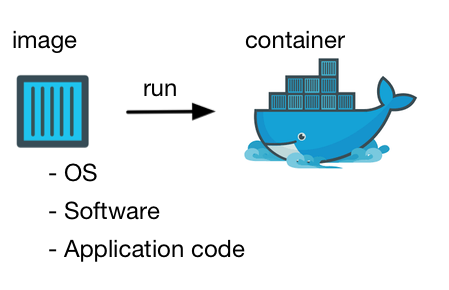
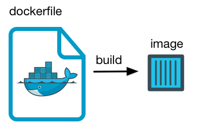

Schenker AG TechTalk
Docker


What is Docker?
- Same environment
- Sandbox Projects
- It just works
Containers
- os
- config
- code
- ...
Docker and classic VM Comparison

Image, Container, Instance Dockerfile WTF?!
Image, Container, Instance Dockerfile WTF?!
Hands on
dockerize this presentation
- create Dockerfile
- build it
- run it
creating a Dockerfile
function linkify( selector ) {
if( supports3DTransforms ) {
var nodes = document.querySelectorAll( selector );
for( var i = 0, len = nodes.length; i < len; i++ ) {
var node = nodes[i];
if( !node.className ) {
node.className += ' roll';
}
}
}
}